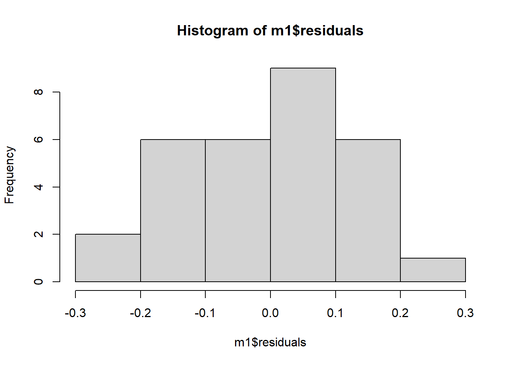
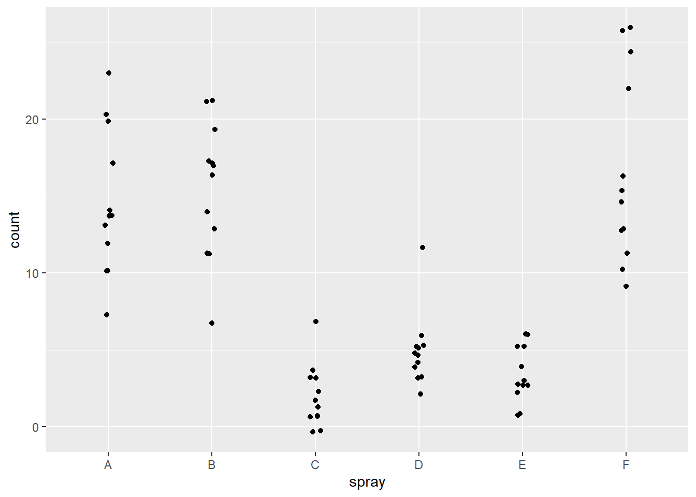
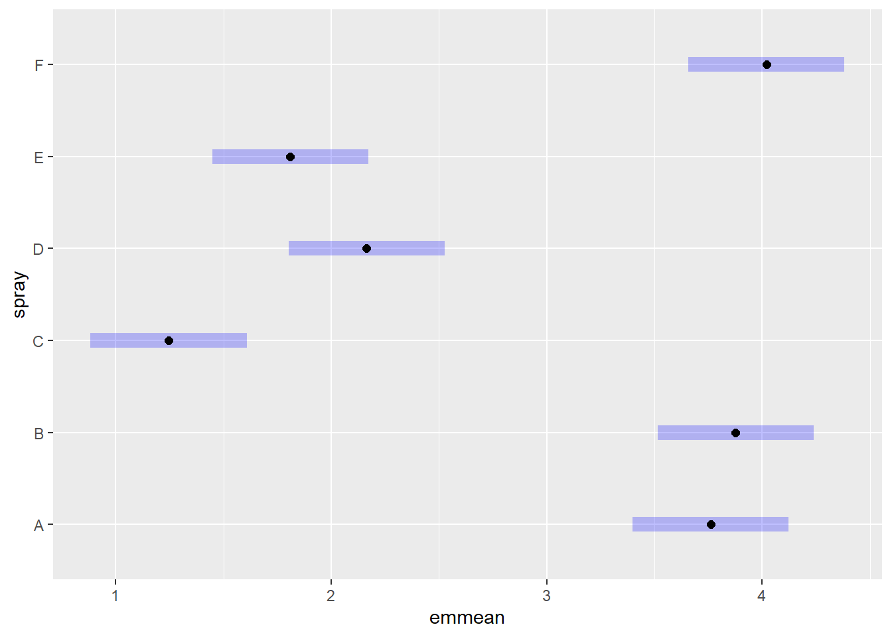
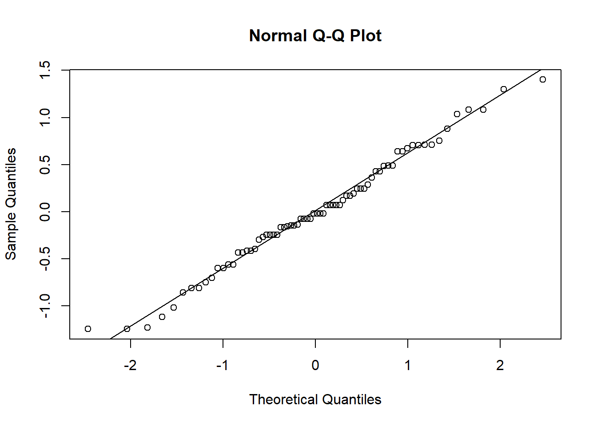
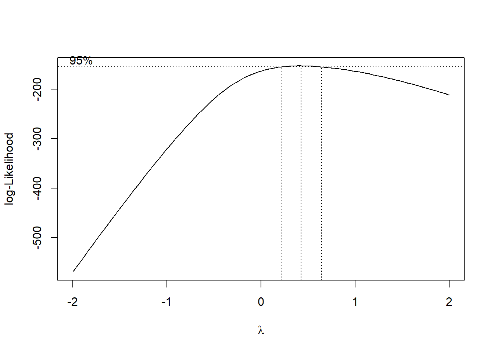
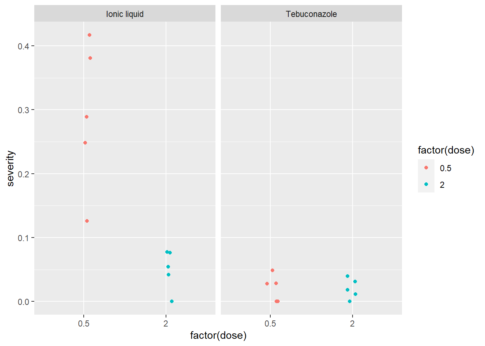

library(gsheet)Warning: package 'gsheet' was built under R version 4.3.3mg <- gsheet2tbl("https://docs.google.com/spreadsheets/d/1bq2N19DcZdtax2fQW9OHSGMR0X2__Z9T/edit#gid=983033137")Carregamos o pacote gsheet para a importação dos dados do Google Drive
library(gsheet)Warning: package 'gsheet' was built under R version 4.3.3mg <- gsheet2tbl("https://docs.google.com/spreadsheets/d/1bq2N19DcZdtax2fQW9OHSGMR0X2__Z9T/edit#gid=983033137")library(tidyverse)── Attaching core tidyverse packages ──────────────────────── tidyverse 2.0.0 ──
✔ dplyr 1.1.4 ✔ readr 2.1.5
✔ forcats 1.0.0 ✔ stringr 1.5.1
✔ ggplot2 3.4.4 ✔ tibble 3.2.1
✔ lubridate 1.9.3 ✔ tidyr 1.3.0
✔ purrr 1.0.2
── Conflicts ────────────────────────────────────────── tidyverse_conflicts() ──
✖ dplyr::filter() masks stats::filter()
✖ dplyr::lag() masks stats::lag()
ℹ Use the conflicted package (<http://conflicted.r-lib.org/>) to force all conflicts to become errorsmg |>
ggplot(aes(trat,comp))+
geom_boxplot()
Transformamos os dados com a função pivot_wider, transformando os dados longos em formato largo.
mg2 <- mg |>
pivot_wider(names_from = trat,
values_from = comp )
teste1 <- t.test(mg2$control, mg2$Mg2)
shapiro.test(mg2$control)
Shapiro-Wilk normality test
data: mg2$control
W = 0.93886, p-value = 0.5404hist(mg2$Mg2)
var.test(mg2$control, mg2$Mg2)
F test to compare two variances
data: mg2$control and mg2$Mg2
F = 0.67654, num df = 9, denom df = 9, p-value = 0.5698
alternative hypothesis: true ratio of variances is not equal to 1
95 percent confidence interval:
0.1680428 2.7237436
sample estimates:
ratio of variances
0.6765394 qqnorm(mg2$Mg2)
qqline(mg2$Mg2)
library(report)Warning: package 'report' was built under R version 4.3.3report(teste1)Effect sizes were labelled following Cohen's (1988) recommendations.
The Welch Two Sample t-test testing the difference between mg2$control and
mg2$Mg2 (mean of x = 15.68, mean of y = 10.52) suggests that the effect is
positive, statistically significant, and large (difference = 5.16, 95% CI
[3.83, 6.49], t(17.35) = 8.15, p < .001; Cohen's d = 3.65, 95% CI [2.14, 5.12])Utilizamos O teste t de Student para verificar se há uma diferença significativa entre as médias das duas condições (control e Mg2).
teste1 <- t.test(mg2$control, mg2$Mg2)Usamos o teste de Shapiro-Wilk para verificar a normalidade dos dados. Histograma para visualizar a distribuição dos dados. Teste de homogeneidade de variâncias para verificar se as variâncias dos grupos são semelhantes. Q-Q plot para uma inspeção visual da normalidade dos dados. A biblioteca report utilizamos para gerar um relatório detalhado e compreensível dos resultados do teste t.
shapiro.test(mg2$control)
Shapiro-Wilk normality test
data: mg2$control
W = 0.93886, p-value = 0.5404hist(mg2$Mg2)
var.test(mg2$control, mg2$Mg2)
F test to compare two variances
data: mg2$control and mg2$Mg2
F = 0.67654, num df = 9, denom df = 9, p-value = 0.5698
alternative hypothesis: true ratio of variances is not equal to 1
95 percent confidence interval:
0.1680428 2.7237436
sample estimates:
ratio of variances
0.6765394 qqnorm(mg2$Mg2)
qqline(mg2$Mg2)
library(report)
report(teste1)Effect sizes were labelled following Cohen's (1988) recommendations.
The Welch Two Sample t-test testing the difference between mg2$control and
mg2$Mg2 (mean of x = 15.68, mean of y = 10.52) suggests that the effect is
positive, statistically significant, and large (difference = 5.16, 95% CI
[3.83, 6.49], t(17.35) = 8.15, p < .001; Cohen's d = 3.65, 95% CI [2.14, 5.12])Carregamos o arquivo de uma planilha do Google Drive utilizando a função gsheet2tbl e plotamos um gráfico boxplot utilizando a função geom_boxplot.
library(gsheet)
library(ggplot2)
escala <- gsheet2tbl("https://docs.google.com/spreadsheets/d/1bq2N19DcZdtax2fQW9OHSGMR0X2__Z9T/edit#gid=1729131173")
escala |>
ggplot(aes(assessment,acuracia))+
geom_boxplot()
Os dados foram reorganizados de um formato longo para um formato largo usando pivot_wider para facilitar a comparação entre tratamentos.
escala2 <-escala |>
select(assessment,rater,acuracia) |>
pivot_wider(names_from = assessment,
values_from = acuracia)
shapiro.test(escala2$Unaided)
Shapiro-Wilk normality test
data: escala2$Unaided
W = 0.7748, p-value = 0.007155shapiro.test(escala2$Aided1)
Shapiro-Wilk normality test
data: escala2$Aided1
W = 0.92852, p-value = 0.4335var.test(escala2$Unaided, escala2$Aided1)
F test to compare two variances
data: escala2$Unaided and escala2$Aided1
F = 20.978, num df = 9, denom df = 9, p-value = 0.000106
alternative hypothesis: true ratio of variances is not equal to 1
95 percent confidence interval:
5.210754 84.459185
sample estimates:
ratio of variances
20.97847 t.test(escala2$Aided1, escala2$Unaided,
paired = TRUE,
var.equal = FALSE )
Paired t-test
data: escala2$Aided1 and escala2$Unaided
t = 4.4214, df = 9, p-value = 0.001668
alternative hypothesis: true mean difference is not equal to 0
95 percent confidence interval:
0.1147647 0.3552353
sample estimates:
mean difference
0.235 Utilizamos o teste Shapiro-Wilk para Verificar se as variáveis Unaided e Aided1 seguiam uma distribuição normal. O var.test verificou se as variâncias eram homogêneas e o teste t utilizamos para comparar as médias das variáveis Aided1 e Unaided em pares, assumindo que os dados são dependentes.
shapiro.test(escala2$Unaided)
Shapiro-Wilk normality test
data: escala2$Unaided
W = 0.7748, p-value = 0.007155shapiro.test(escala2$Aided1)
Shapiro-Wilk normality test
data: escala2$Aided1
W = 0.92852, p-value = 0.4335var.test(escala2$Unaided, escala2$Aided1)
F test to compare two variances
data: escala2$Unaided and escala2$Aided1
F = 20.978, num df = 9, denom df = 9, p-value = 0.000106
alternative hypothesis: true ratio of variances is not equal to 1
95 percent confidence interval:
5.210754 84.459185
sample estimates:
ratio of variances
20.97847 t.test(escala2$Aided1, escala2$Unaided,
paired = TRUE,
var.equal = FALSE )
Paired t-test
data: escala2$Aided1 and escala2$Unaided
t = 4.4214, df = 9, p-value = 0.001668
alternative hypothesis: true mean difference is not equal to 0
95 percent confidence interval:
0.1147647 0.3552353
sample estimates:
mean difference
0.235 Utilizamos o teste Shapiro-Wilk para Verificar se as variáveis Unaided e Aided1 seguiam uma distribuição normal. O var.test verificou se as variâncias eram homogêneas. O teste de Wilcoxon pareado (também conhecido como teste de postos sinalizados de Wilcoxon) é uma alternativa não paramétrica ao teste t pareado. Ele é usado quando os dados não atendem aos pressupostos de normalidade necessários para o teste t pareado.
shapiro.test(escala2$Unaided)
Shapiro-Wilk normality test
data: escala2$Unaided
W = 0.7748, p-value = 0.007155shapiro.test(escala2$Aided1)
Shapiro-Wilk normality test
data: escala2$Aided1
W = 0.92852, p-value = 0.4335var.test(escala2$Unaided, escala2$Aided1)
F test to compare two variances
data: escala2$Unaided and escala2$Aided1
F = 20.978, num df = 9, denom df = 9, p-value = 0.000106
alternative hypothesis: true ratio of variances is not equal to 1
95 percent confidence interval:
5.210754 84.459185
sample estimates:
ratio of variances
20.97847 wilcox.test(escala2$Aided1,
escala2$Unaided,
paired = TRUE)Warning in wilcox.test.default(escala2$Aided1, escala2$Unaided, paired = TRUE):
não é possível computar o valor de p exato com o de desempate
Wilcoxon signed rank test with continuity correction
data: escala2$Aided1 and escala2$Unaided
V = 55, p-value = 0.005889
alternative hypothesis: true location shift is not equal to 0Utilizamos a função gsheet2tbl para carregar os dados da planilha do Google Drive. Confeccionamos um gráfico de dispersão para ajudar a visualizar a relação entre as variáveis especie e tcm, com cada ponto representando uma observação no dataset. A função geom_jitter ajuda a evitar a sobreposição de pontos, facilitando a visualização das distribuições dos dados.
micelial <- gsheet2tbl("https://docs.google.com/spreadsheets/d/1bq2N19DcZdtax2fQW9OHSGMR0X2__Z9T/edit#gid=959387827")
micelial |>
ggplot (aes(especie,tcm))+
geom_jitter(width = 0.05)Realizamos uma análise de variância (ANOVA) no modelo ajustado m1 para testar a significância do preditor especie. Depois criamos um histograma dos resíduos do modelo para visualizar a distribuição dos erros. Realizamos o teste de Shapiro-Wilk para verificar a normalidade dos resíduos do modelo. Realizamos o teste de Bartlett para verificar a homogeneidade das variâncias entre os grupos definidos por especie. Usamos a função emmeans do pacote emmeans para calcular as médias estimadas dos níveis de especie. Utilizamos o pacote multcomp e a função cld(compact letter display) para realizar comparações múltiplas das médias e adicionar letras compactas para indicar grupos significativamente diferentes.O pacote DHARMa foi utilizado para simular resíduos do modelo m1 e criar um gráfico de diagnóstico dos resíduos simulados. O pacote performance foi usado para verificar a normalidade dos resíduos check_normality, a heteroscedasticidade check_heteroscedasticity e realizar uma verificação abrangente do modelo check_model.
m1 <-lm(tcm ~ especie, data = micelial)
anova (m1)Analysis of Variance Table
Response: tcm
Df Sum Sq Mean Sq F value Pr(>F)
especie 4 1.46958 0.36739 19.629 2.028e-07 ***
Residuals 25 0.46792 0.01872
---
Signif. codes: 0 '***' 0.001 '**' 0.01 '*' 0.05 '.' 0.1 ' ' 1summary(m1)
Call:
lm(formula = tcm ~ especie, data = micelial)
Residuals:
Min 1Q Median 3Q Max
-0.23667 -0.09667 0.01583 0.08833 0.28333
Coefficients:
Estimate Std. Error t value Pr(>|t|)
(Intercept) 1.57167 0.05585 28.140 < 2e-16 ***
especieFaus -0.33500 0.07899 -4.241 0.000266 ***
especieFcor -0.25000 0.07899 -3.165 0.004047 **
especieFgra -0.66000 0.07899 -8.356 1.05e-08 ***
especieFmer -0.14500 0.07899 -1.836 0.078317 .
---
Signif. codes: 0 '***' 0.001 '**' 0.01 '*' 0.05 '.' 0.1 ' ' 1
Residual standard error: 0.1368 on 25 degrees of freedom
Multiple R-squared: 0.7585, Adjusted R-squared: 0.7199
F-statistic: 19.63 on 4 and 25 DF, p-value: 2.028e-07hist(m1$residuals)
shapiro.test(m1$residuals)
Shapiro-Wilk normality test
data: m1$residuals
W = 0.9821, p-value = 0.8782bartlett.test(tcm ~ especie, data = micelial)
Bartlett test of homogeneity of variances
data: tcm by especie
Bartlett's K-squared = 4.4367, df = 4, p-value = 0.3501library(emmeans)Warning: package 'emmeans' was built under R version 4.3.3medias1 <- emmeans(m1, ~especie)
library(multcomp)Warning: package 'multcomp' was built under R version 4.3.3Carregando pacotes exigidos: mvtnormCarregando pacotes exigidos: survivalCarregando pacotes exigidos: TH.dataCarregando pacotes exigidos: MASS
Attaching package: 'MASS'The following object is masked from 'package:dplyr':
select
Attaching package: 'TH.data'The following object is masked from 'package:MASS':
geyserlibrary(multcompView)Warning: package 'multcompView' was built under R version 4.3.3cld(medias1) especie emmean SE df lower.CL upper.CL .group
Fgra 0.912 0.0559 25 0.797 1.03 1
Faus 1.237 0.0559 25 1.122 1.35 2
Fcor 1.322 0.0559 25 1.207 1.44 2
Fmer 1.427 0.0559 25 1.312 1.54 23
Fasi 1.572 0.0559 25 1.457 1.69 3
Confidence level used: 0.95
P value adjustment: tukey method for comparing a family of 5 estimates
significance level used: alpha = 0.05
NOTE: If two or more means share the same grouping symbol,
then we cannot show them to be different.
But we also did not show them to be the same. library(DHARMa)Warning: package 'DHARMa' was built under R version 4.3.3This is DHARMa 0.4.6. For overview type '?DHARMa'. For recent changes, type news(package = 'DHARMa')plot(simulateResiduals(m1))
library(performance)Warning: package 'performance' was built under R version 4.3.3check_normality(m1)OK: residuals appear as normally distributed (p = 0.878).check_heteroscedasticity(m1)OK: Error variance appears to be homoscedastic (p = 0.880).check_model(m1)Carregamos o pacote tidyverse. Foi carregado o dataset InsectSprays e o armazena na variável inseticida. Contamos o número de ocorrências de cada tipo de spray no dataset, fornecendo uma visão rápida da distribuição dos diferentes sprays.
library(tidyverse)
inseticida <- InsectSprays
?InsectSpraysstarting httpd help server ... doneinseticida |>
count (spray) spray n
1 A 12
2 B 12
3 C 12
4 D 12
5 E 12
6 F 12inseticida |>
ggplot (aes(spray,count))+
geom_jitter(width = 0.05)
inseticida |>
ggplot(aes(spray,count))+
geom_boxplot()
m1 <- lm (count ~ spray, data = inseticida)
summary(m1)
Call:
lm(formula = count ~ spray, data = inseticida)
Residuals:
Min 1Q Median 3Q Max
-8.333 -1.958 -0.500 1.667 9.333
Coefficients:
Estimate Std. Error t value Pr(>|t|)
(Intercept) 14.5000 1.1322 12.807 < 2e-16 ***
sprayB 0.8333 1.6011 0.520 0.604
sprayC -12.4167 1.6011 -7.755 7.27e-11 ***
sprayD -9.5833 1.6011 -5.985 9.82e-08 ***
sprayE -11.0000 1.6011 -6.870 2.75e-09 ***
sprayF 2.1667 1.6011 1.353 0.181
---
Signif. codes: 0 '***' 0.001 '**' 0.01 '*' 0.05 '.' 0.1 ' ' 1
Residual standard error: 3.922 on 66 degrees of freedom
Multiple R-squared: 0.7244, Adjusted R-squared: 0.7036
F-statistic: 34.7 on 5 and 66 DF, p-value: < 2.2e-16anova (m1)Analysis of Variance Table
Response: count
Df Sum Sq Mean Sq F value Pr(>F)
spray 5 2668.8 533.77 34.702 < 2.2e-16 ***
Residuals 66 1015.2 15.38
---
Signif. codes: 0 '***' 0.001 '**' 0.01 '*' 0.05 '.' 0.1 ' ' 1library(emmeans)
m1_medias <- emmeans(m1, ~spray)
plot(m1_medias)
library(multcomp)
cld(m1_medias) spray emmean SE df lower.CL upper.CL .group
C 2.08 1.13 66 -0.177 4.34 1
E 3.50 1.13 66 1.240 5.76 1
D 4.92 1.13 66 2.656 7.18 1
A 14.50 1.13 66 12.240 16.76 2
B 15.33 1.13 66 13.073 17.59 2
F 16.67 1.13 66 14.406 18.93 2
Confidence level used: 0.95
P value adjustment: tukey method for comparing a family of 6 estimates
significance level used: alpha = 0.05
NOTE: If two or more means share the same grouping symbol,
then we cannot show them to be different.
But we also did not show them to be the same. m1$residuals 1 2 3 4 5 6
-4.50000000 -7.50000000 5.50000000 -0.50000000 -0.50000000 -2.50000000
7 8 9 10 11 12
-4.50000000 8.50000000 2.50000000 5.50000000 -0.50000000 -1.50000000
13 14 15 16 17 18
-4.33333333 1.66666667 5.66666667 -4.33333333 0.66666667 -1.33333333
19 20 21 22 23 24
1.66666667 1.66666667 3.66666667 5.66666667 -8.33333333 -2.33333333
25 26 27 28 29 30
-2.08333333 -1.08333333 4.91666667 -0.08333333 0.91666667 -1.08333333
31 32 33 34 35 36
-0.08333333 -1.08333333 0.91666667 -2.08333333 -1.08333333 1.91666667
37 38 39 40 41 42
-1.91666667 0.08333333 7.08333333 1.08333333 -0.91666667 -1.91666667
43 44 45 46 47 48
0.08333333 0.08333333 0.08333333 0.08333333 -2.91666667 -0.91666667
49 50 51 52 53 54
-0.50000000 1.50000000 -0.50000000 1.50000000 -0.50000000 2.50000000
55 56 57 58 59 60
-2.50000000 -2.50000000 -0.50000000 -1.50000000 2.50000000 0.50000000
61 62 63 64 65 66
-5.66666667 -7.66666667 -1.66666667 5.33333333 -1.66666667 -0.66666667
67 68 69 70 71 72
-3.66666667 -6.66666667 9.33333333 9.33333333 7.33333333 -3.66666667 hist(m1$residuals)
qqnorm(m1$residuals)
qqline(m1$residuals)
shapiro.test(m1$residuals)
Shapiro-Wilk normality test
data: m1$residuals
W = 0.96006, p-value = 0.02226bartlett.test(count ~ spray,
data = inseticida)
Bartlett test of homogeneity of variances
data: count by spray
Bartlett's K-squared = 25.96, df = 5, p-value = 9.085e-05library(performance)
check_normality(m1)Warning: Non-normality of residuals detected (p = 0.022).check_heteroscedasticity(m1)Warning: Heteroscedasticity (non-constant error variance) detected (p < .001).library(DHARMa)
plot(simulateResiduals(m1))
Como os dados não foram normais e as variâncias não foram homogêneas realizamos a transformação dos dados utilizando a função mutate, count2 é a raiz quadrada dos valores na coluna count. Esta transformação é frequentemente usada para estabilizar a variância ou aproximar a normalidade dos dados. Confeccionamos um gráfico boxplot mostrando a distribuição da raiz quadrada das contagens de insetos (count2) para cada tipo de spray (spray). Cada boxplot representa a variação de count2 dentro de cada grupo de spray.
inseticida <-inseticida |>
mutate(count2 = sqrt (count))
inseticida |>
ggplot(aes(spray,count2))+
geom_boxplot()
Realizamos uma análise de variância (ANOVA) no modelo ajustado. Usamos emmeans para calcular as médias estimadas dos níveis de spray.Plotamos essas médias estimadas.Usamos cld para adicionar letras compactas indicando grupos significativamente diferentes. pwpm(m2_medias) e pwpp(m2_medias) mostram as comparações de pares em formato de tabela e gráfico, pairs(m2_medias) exibe os pares de médias. Plotamos os resíduos do modelo. Realizamos o teste de Shapiro-Wilk para verificar a normalidade dos resíduos. Realizamos o teste de Bartlett para verificar a homogeneidade das variâncias.Usamos funções do pacote performance para verificar a normalidade dos resíduos e a heteroscedasticidade. Usamos o pacote DHARMa para simular resíduos do modelo e plotamos esses resíduos para diagnóstico.Usamos a função boxcox do pacote MASS para encontrar a transformação Box-Cox que estabiliza a variância e normaliza os dados. Calculamos o valor de lambda que maximiza a função de log-verossimilhança. Transformamos a variável count usando o valor de lambda obtido.
m2 <- lm (count2 ~ spray, data = inseticida)
summary(m2)
Call:
lm(formula = count2 ~ spray, data = inseticida)
Residuals:
Min 1Q Median 3Q Max
-1.24486 -0.39970 -0.01902 0.42661 1.40089
Coefficients:
Estimate Std. Error t value Pr(>|t|)
(Intercept) 3.7607 0.1814 20.733 < 2e-16 ***
sprayB 0.1160 0.2565 0.452 0.653
sprayC -2.5158 0.2565 -9.807 1.64e-14 ***
sprayD -1.5963 0.2565 -6.223 3.80e-08 ***
sprayE -1.9512 0.2565 -7.606 1.34e-10 ***
sprayF 0.2579 0.2565 1.006 0.318
---
Signif. codes: 0 '***' 0.001 '**' 0.01 '*' 0.05 '.' 0.1 ' ' 1
Residual standard error: 0.6283 on 66 degrees of freedom
Multiple R-squared: 0.7724, Adjusted R-squared: 0.7552
F-statistic: 44.8 on 5 and 66 DF, p-value: < 2.2e-16anova (m2)Analysis of Variance Table
Response: count2
Df Sum Sq Mean Sq F value Pr(>F)
spray 5 88.438 17.6876 44.799 < 2.2e-16 ***
Residuals 66 26.058 0.3948
---
Signif. codes: 0 '***' 0.001 '**' 0.01 '*' 0.05 '.' 0.1 ' ' 1library(emmeans)
m2_medias <- emmeans(m2, ~spray)
plot(m2_medias)
library(multcomp)
cld(m2_medias) spray emmean SE df lower.CL upper.CL .group
C 1.24 0.181 66 0.883 1.61 1
E 1.81 0.181 66 1.447 2.17 12
D 2.16 0.181 66 1.802 2.53 2
A 3.76 0.181 66 3.399 4.12 3
B 3.88 0.181 66 3.514 4.24 3
F 4.02 0.181 66 3.656 4.38 3
Confidence level used: 0.95
P value adjustment: tukey method for comparing a family of 6 estimates
significance level used: alpha = 0.05
NOTE: If two or more means share the same grouping symbol,
then we cannot show them to be different.
But we also did not show them to be the same. pwpm(m2_medias) A B C D E F
A [3.76] 0.9975 <.0001 <.0001 <.0001 0.9145
B -0.116 [3.88] <.0001 <.0001 <.0001 0.9936
C 2.516 2.632 [1.24] 0.0081 0.2513 <.0001
D 1.596 1.712 -0.919 [2.16] 0.7366 <.0001
E 1.951 2.067 -0.565 0.355 [1.81] <.0001
F -0.258 -0.142 -2.774 -1.854 -2.209 [4.02]
Row and column labels: spray
Upper triangle: P values adjust = "tukey"
Diagonal: [Estimates] (emmean)
Lower triangle: Comparisons (estimate) earlier vs. laterpwpp(m2_medias)pairs(m2_medias) contrast estimate SE df t.ratio p.value
A - B -0.116 0.257 66 -0.452 0.9975
A - C 2.516 0.257 66 9.807 <.0001
A - D 1.596 0.257 66 6.223 <.0001
A - E 1.951 0.257 66 7.606 <.0001
A - F -0.258 0.257 66 -1.006 0.9145
B - C 2.632 0.257 66 10.259 <.0001
B - D 1.712 0.257 66 6.675 <.0001
B - E 2.067 0.257 66 8.058 <.0001
B - F -0.142 0.257 66 -0.554 0.9936
C - D -0.919 0.257 66 -3.584 0.0081
C - E -0.565 0.257 66 -2.201 0.2513
C - F -2.774 0.257 66 -10.813 <.0001
D - E 0.355 0.257 66 1.383 0.7366
D - F -1.854 0.257 66 -7.229 <.0001
E - F -2.209 0.257 66 -8.612 <.0001
P value adjustment: tukey method for comparing a family of 6 estimates m2$residuals 1 2 3 4 5 6
-0.59840073 -1.11492708 0.71145756 -0.01902101 -0.01902101 -0.29657678
7 8 9 10 11 12
-0.59840073 1.03515313 0.36242723 0.71145756 -0.01902101 -0.15512712
13 14 15 16 17 18
-0.56000661 0.24647423 0.70594430 -0.56000661 0.12336860 -0.13497401
19 20 21 22 23 24
0.24647423 0.24647423 0.48226755 0.70594430 -1.23088009 -0.27108012
25 26 27 28 29 30
-1.24485667 -0.24485667 1.40089464 0.16935689 0.48719414 -0.24485667
31 32 33 34 35 36
0.16935689 -0.24485667 0.48719414 -1.24485667 -0.24485667 0.75514333
37 38 39 40 41 42
-0.43230306 0.07171411 1.29974775 0.28513587 -0.16435387 -0.43230306
43 44 45 46 47 48
0.07171411 0.07171411 0.07171411 0.07171411 -0.75014031 -0.16435387
49 50 51 52 53 54
-0.07741021 0.42660696 -0.07741021 0.42660696 -0.07741021 0.64002872
55 56 57 58 59 60
-0.80946102 -0.80946102 -0.07741021 -0.39524746 0.64002872 0.19053898
61 62 63 64 65 66
-0.70199237 -1.01861716 -0.14563382 0.67179860 -0.14563382 -0.01861716
67 68 69 70 71 72
-0.41306589 -0.85633950 1.08040235 1.08040235 0.88036232 -0.41306589 hist(m2$residuals)
qqnorm(m2$residuals)
qqline(m2$residuals)
shapiro.test(m2$residuals)
Shapiro-Wilk normality test
data: m2$residuals
W = 0.98721, p-value = 0.6814bartlett.test(count2 ~ spray,
data = inseticida)
Bartlett test of homogeneity of variances
data: count2 by spray
Bartlett's K-squared = 3.7525, df = 5, p-value = 0.5856library(performance)
check_normality(m2)OK: residuals appear as normally distributed (p = 0.681).check_heteroscedasticity(m2)OK: Error variance appears to be homoscedastic (p = 0.854).library(DHARMa)
plot(simulateResiduals(m2))
#Transformação Box-Cox (encontra uma equação que estabiliza a variância e normaliza)
library(MASS)
b <- boxcox(lm(inseticida$count+0.1~1))
lambda <- b$x[which.max(b$y)]
lambda <-
inseticida$count3 <- (inseticida$count ^ lambda - 1)/ lambda
inseticida$count3 [1] 3.903635 3.024469 6.043993 4.864268 4.864268 4.407118 3.903635
[8] 6.557185 5.484274 6.043993 4.864268 4.640760 4.161975 5.484274
[15] 6.219699 4.161975 5.285168 4.864268 5.484274 5.484274 5.863153
[22] 6.219699 3.024469 4.640760 -2.357143 0.000000 3.024469 0.805831
[29] 1.399509 0.000000 0.805831 0.000000 1.399509 -2.357143 0.000000
[36] 1.887150 1.399509 2.308577 4.407118 2.683787 1.887150 1.399509
[43] 2.308577 2.308577 2.308577 2.308577 0.805831 1.887150 1.399509
[50] 2.308577 1.399509 2.308577 1.399509 2.683787 0.000000 0.000000
[57] 1.399509 0.805831 2.683787 1.887150 4.161975 3.629951 5.078760
[64] 6.390651 5.078760 5.285168 4.640760 3.903635 7.033117 7.033117
[71] 6.719601 4.640760Carregamos o pacote agricolae para análise de dados, e realizamos o teste de Kruskal-Wallis para avaliar se há diferenças significativas nas distribuições de count entre os diferentes níveis de spray. Realizamos uma análise de comparações múltiplas após o teste de Kruskal-Wallis, agrupando os tratamentos que não são significativamente diferentes entre si.
library(agricolae)
kruskal.test(count ~spray,
data = inseticida)
Kruskal-Wallis rank sum test
data: count by spray
Kruskal-Wallis chi-squared = 54.691, df = 5, p-value = 1.511e-10m3 <- kruskal(inseticida$count,
inseticida$spray,
group = TRUE)
m3$statistics
Chisq Df p.chisq t.value MSD
54.69134 5 1.510845e-10 1.996564 8.462804
$parameters
test p.ajusted name.t ntr alpha
Kruskal-Wallis none inseticida$spray 6 0.05
$means
inseticida.count rank std r Min Max Q25 Q50 Q75
A 14.500000 52.16667 4.719399 12 7 23 11.50 14.0 17.75
B 15.333333 54.83333 4.271115 12 7 21 12.50 16.5 17.50
C 2.083333 11.45833 1.975225 12 0 7 1.00 1.5 3.00
D 4.916667 25.58333 2.503028 12 2 12 3.75 5.0 5.00
E 3.500000 19.33333 1.732051 12 1 6 2.75 3.0 5.00
F 16.666667 55.62500 6.213378 12 9 26 12.50 15.0 22.50
$comparison
NULL
$groups
inseticida$count groups
F 55.62500 a
B 54.83333 a
A 52.16667 a
D 25.58333 b
E 19.33333 bc
C 11.45833 c
attr(,"class")
[1] "group"Primeiramente foi utilizado o modelo linear misto (GLM), utilizando a família Poisson, Os GLMs são uma classe de modelos estatísticos flexíveis que permitem que a variável de resposta tenha distribuições de erro diferentes da distribuição normal, que é assumida nos modelos de regressão linear clássicos. Posteriormente, realizamos uma análise de variância (Anova), utilizamos o pacote car para fornecer uma tabela ANOVA do Tipo II ou Tipo III para o modelo, que pode ser mais informativa em alguns contextos. Usamos o comando plot(simulateResiduals(m4)) para plotar os resíduos do modelo usando a função simulateResiduals, que é útil para verificar a adequação do modelo. Calculamos as médias marginais estimadas (EMMs) para os níveis do fator spray, na escala da resposta. Usamos a função cld para gerar uma exibição compacta de letras para as EMMs, o que ajuda a interpretar as comparações par a par.
m4 <- glm(count ~ spray,
family= poisson,
data = inseticida)
summary(m4)
Call:
glm(formula = count ~ spray, family = poisson, data = inseticida)
Coefficients:
Estimate Std. Error z value Pr(>|z|)
(Intercept) 2.67415 0.07581 35.274 < 2e-16 ***
sprayB 0.05588 0.10574 0.528 0.597
sprayC -1.94018 0.21389 -9.071 < 2e-16 ***
sprayD -1.08152 0.15065 -7.179 7.03e-13 ***
sprayE -1.42139 0.17192 -8.268 < 2e-16 ***
sprayF 0.13926 0.10367 1.343 0.179
---
Signif. codes: 0 '***' 0.001 '**' 0.01 '*' 0.05 '.' 0.1 ' ' 1
(Dispersion parameter for poisson family taken to be 1)
Null deviance: 409.041 on 71 degrees of freedom
Residual deviance: 98.329 on 66 degrees of freedom
AIC: 376.59
Number of Fisher Scoring iterations: 5anova(m4)Analysis of Deviance Table
Model: poisson, link: log
Response: count
Terms added sequentially (first to last)
Df Deviance Resid. Df Resid. Dev
NULL 71 409.04
spray 5 310.71 66 98.33library(car)Warning: package 'car' was built under R version 4.3.3Carregando pacotes exigidos: carData
Attaching package: 'car'The following object is masked from 'package:dplyr':
recodeThe following object is masked from 'package:purrr':
someAnova (m4)Analysis of Deviance Table (Type II tests)
Response: count
LR Chisq Df Pr(>Chisq)
spray 310.71 5 < 2.2e-16 ***
---
Signif. codes: 0 '***' 0.001 '**' 0.01 '*' 0.05 '.' 0.1 ' ' 1plot(simulateResiduals(m4))m4_medias <- emmeans (m4, ~spray,
type= "response")
cld(m4_medias) spray rate SE df asymp.LCL asymp.UCL .group
C 2.08 0.417 Inf 1.41 3.08 1
E 3.50 0.540 Inf 2.59 4.74 12
D 4.92 0.640 Inf 3.81 6.35 2
A 14.50 1.099 Inf 12.50 16.82 3
B 15.33 1.130 Inf 13.27 17.72 3
F 16.67 1.179 Inf 14.51 19.14 3
Confidence level used: 0.95
Intervals are back-transformed from the log scale
P value adjustment: tukey method for comparing a family of 6 estimates
Tests are performed on the log scale
significance level used: alpha = 0.05
NOTE: If two or more means share the same grouping symbol,
then we cannot show them to be different.
But we also did not show them to be the same. ##Anova fatorial
Importamos a planilha do Google Drive utilizando a função gsheet2tbl e criamos um gráfico de pontos para visualização dos dados.
library(gsheet)
li <- gsheet2tbl("https://docs.google.com/spreadsheets/d/1bq2N19DcZdtax2fQW9OHSGMR0X2__Z9T/edit#gid=2023059672")
li |>
ggplot(aes(factor(dose), severity, color = factor (dose)))+
geom_jitter(width=0.1)+
facet_wrap(~treat)
##Modelo fatorial (two-way anova)
Ajustamos um modelo linear com a variável resposta severity e os preditores treat e dose, incluindo a interação entre eles, e realizamos a ANOVA. Plotamos resíduos simulados para verificar a adequação do modelo.: Calcula as EMMs para dose, condicionadas por treat, utilizando o comando emmeans(mf, ~ dose | treat) e visualizamos as letras para para as EMMs, facilitando interpretação das comparações.
mf <- lm (severity ~ treat*factor(dose),
data = li)
mf
Call:
lm(formula = severity ~ treat * factor(dose), data = li)
Coefficients:
(Intercept) treatTebuconazole
0.2921 -0.2711
factor(dose)2 treatTebuconazole:factor(dose)2
-0.2420 0.2412 anova(mf)Analysis of Variance Table
Response: severity
Df Sum Sq Mean Sq F value Pr(>F)
treat 1 0.113232 0.113232 30.358 4.754e-05 ***
factor(dose) 1 0.073683 0.073683 19.755 0.0004077 ***
treat:factor(dose) 1 0.072739 0.072739 19.502 0.0004326 ***
Residuals 16 0.059678 0.003730
---
Signif. codes: 0 '***' 0.001 '**' 0.01 '*' 0.05 '.' 0.1 ' ' 1plot(simulateResiduals(mf))
mf_medias <- emmeans( mf, ~ dose | treat)
mf_mediastreat = Ionic liquid:
dose emmean SE df lower.CL upper.CL
0.5 0.2921 0.0273 16 0.23420 0.3500
2.0 0.0501 0.0273 16 -0.00781 0.1080
treat = Tebuconazole:
dose emmean SE df lower.CL upper.CL
0.5 0.0210 0.0273 16 -0.03690 0.0789
2.0 0.0202 0.0273 16 -0.03768 0.0781
Confidence level used: 0.95 cld(mf_medias)treat = Ionic liquid:
dose emmean SE df lower.CL upper.CL .group
2.0 0.0501 0.0273 16 -0.00781 0.1080 1
0.5 0.2921 0.0273 16 0.23420 0.3500 2
treat = Tebuconazole:
dose emmean SE df lower.CL upper.CL .group
2.0 0.0202 0.0273 16 -0.03768 0.0781 1
0.5 0.0210 0.0273 16 -0.03690 0.0789 1
Confidence level used: 0.95
significance level used: alpha = 0.05
NOTE: If two or more means share the same grouping symbol,
then we cannot show them to be different.
But we also did not show them to be the same.